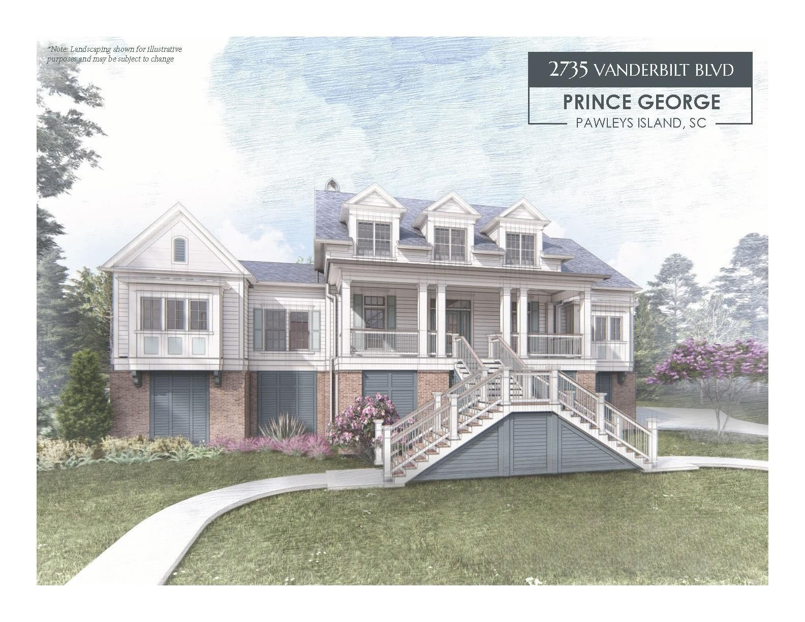
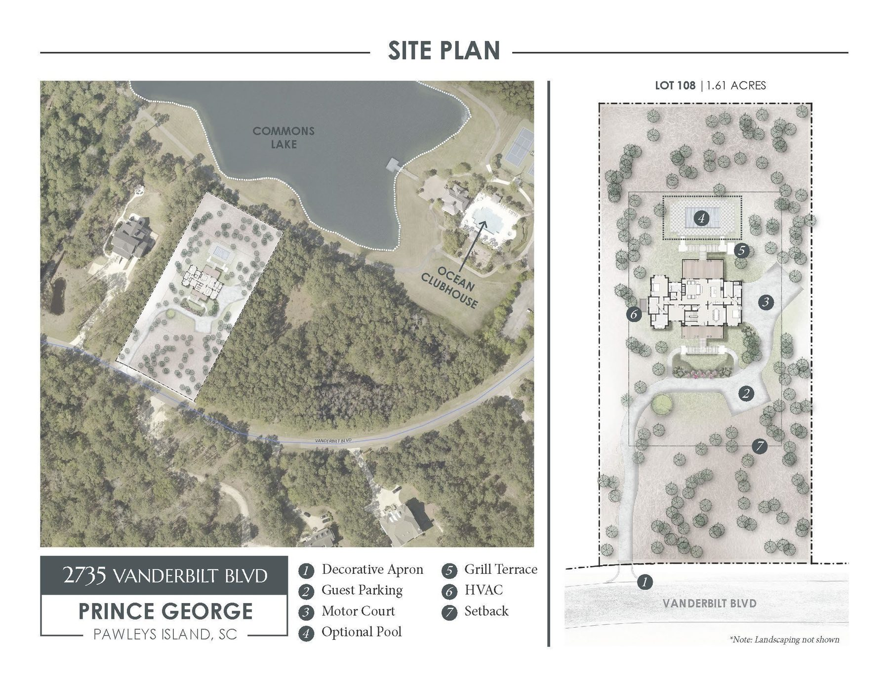
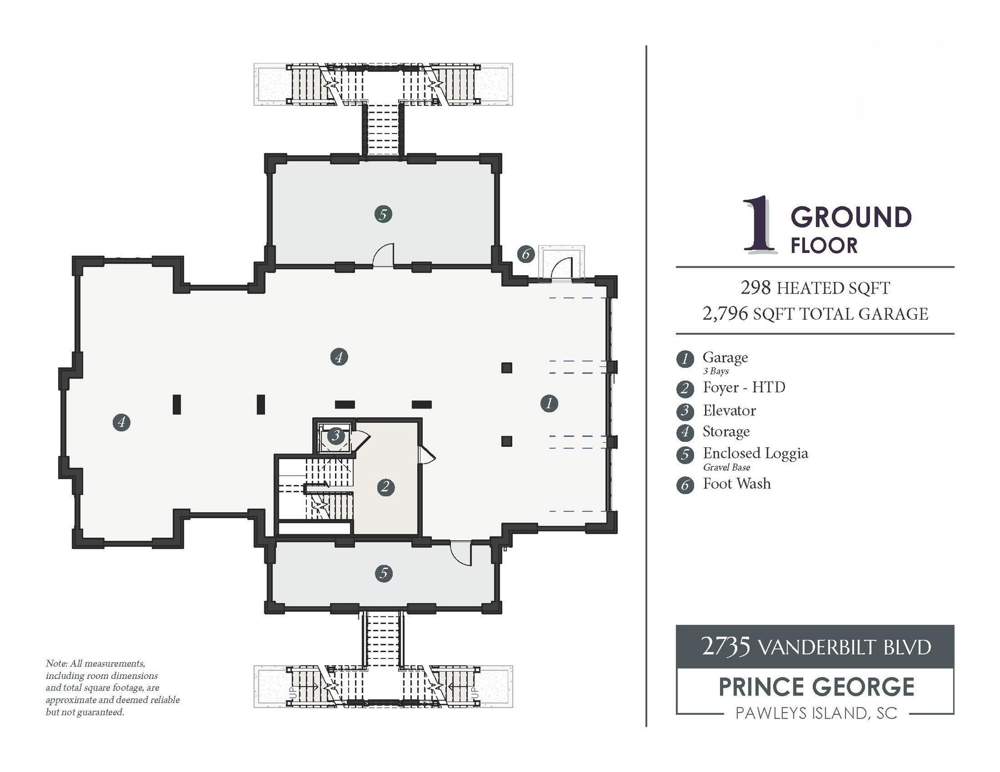
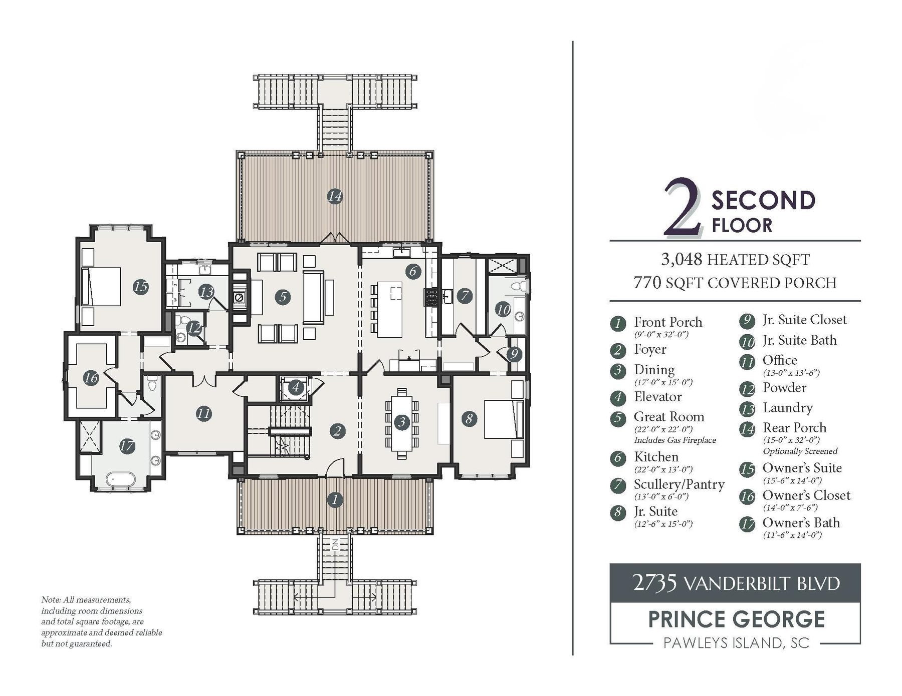
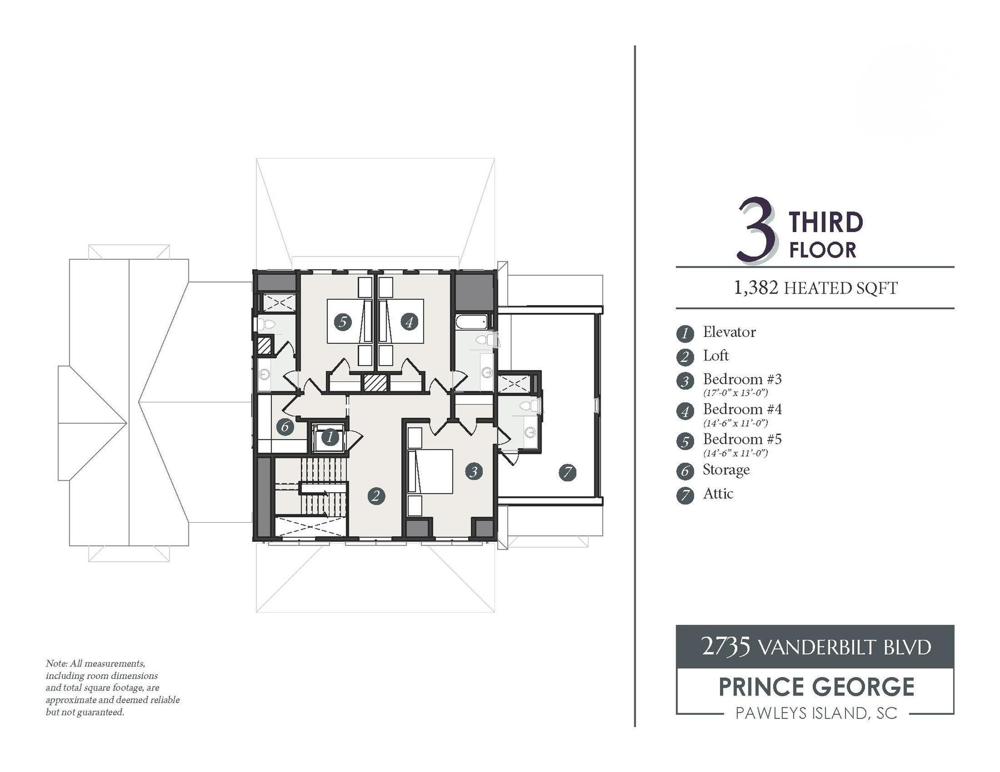
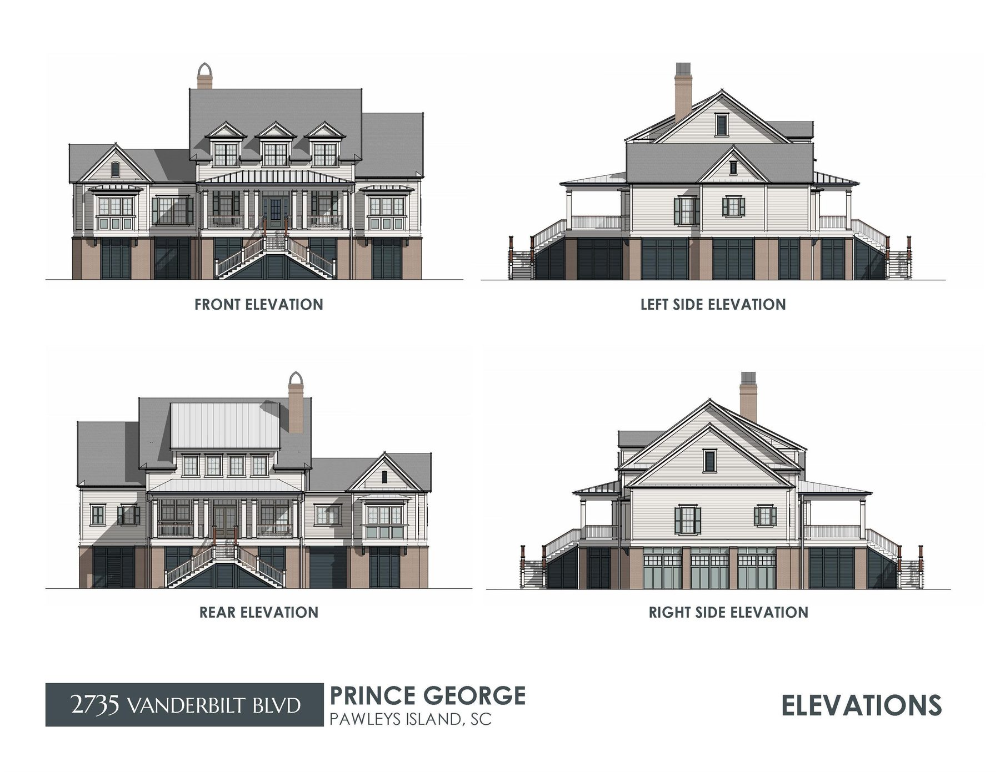
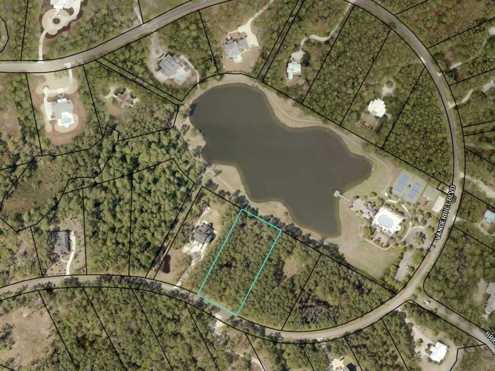

Prince George Ocean, Pawleys Island
2735 Vanderbilt Boulevard
A raised beach house, drawn by Goggans Architecture and not yet built, on the ocean side of Prince George.
Nineteen hundred gated acres between the Atlantic and the Waccamaw, a private beach, a river marina, and a homesite of 1.61 acres on a pond, with a house already drawn for it. Most of Prince George is still woods and water. This week, three homes are for sale in the community. This is one of them.

The drawings and the community, in 17 images
Arrows, the strip, or the chapters. Hover to pause.







The house
The house is drawn in the raised beach tradition. The living rooms sit a full story above grade, deep porches run across the front and the back, and a double stair comes down to the motor court.
The second floor carries the daily rooms: a great room of 22 by 22 feet with a gas fireplace, an open kitchen with a scullery and pantry behind it, a dining room, and an office. The owner's suite and a junior suite are both on this level. Each porch is 32 feet long, and the rear porch can be screened.
Three more bedrooms and a loft are on the third floor. An elevator serves all three levels. At grade there is a three-bay garage, storage, an enclosed loggia, and a foot wash.
The site plan sets the house behind the motor court with guest parking, and leaves room at the back for a grill terrace and an optional pool.
Room by room
Ground floor
298 heated sq ft. Garage, 2,796 sq ft.- Garage three bays
- Foyer heated
- Elevator
- Storage
- Enclosed loggia
- Foot wash
Second floor
3,048 heated sq ft. Covered porch, 770 sq ft.- Front porch 9′ × 32′
- Foyer
- Dining room 17′ × 15′
- Great room gas fireplace22′ × 22′
- Kitchen 22′ × 13′
- Scullery and pantry 13′ × 6′
- Junior suite closet and bath12′6″ × 15′
- Office 13′ × 13′6″
- Powder room
- Laundry
- Rear porch optionally screened15′ × 32′
- Owner's suite 15′6″ × 14′
- Owner's closet 14′ × 7′6″
- Owner's bath 11′6″ × 14′
- Elevator
Third floor
1,382 heated sq ft.- Loft
- Bedroom three 17′ × 13′
- Bedroom four 14′6″ × 11′
- Bedroom five 14′6″ × 11′
- Storage
- Attic
- Elevator
Room names, dimensions, and areas are as drawn by the architect.
The homesite
The homesite is 1.61 acres on the ocean side of Prince George, with frontage on the pond. It is outlined in the aerial view here, and the site plan in the drawing set shows where the house, the motor court, and the optional pool sit on it.

The drawing set
 Site planMotor court, guest parking, grill terrace, optional pool.
Site planMotor court, guest parking, grill terrace, optional pool. Ground floorGarage, foyer, elevator, loggia.
Ground floorGarage, foyer, elevator, loggia. Second floorGreat room, kitchen, both suites, both porches.
Second floorGreat room, kitchen, both suites, both porches. Third floorThree bedrooms and a loft.
Third floorThree bedrooms and a loft. ElevationsFront, rear, and both sides.
ElevationsFront, rear, and both sides.
The full-size sheets are part of the portfolio. Request it below.
The life around it
Prince George sits on the lower Waccamaw Neck, south of Pawleys Island and north of Georgetown, with the Grand Strand up the coast and Charleston an hour and a half down it. The buyer's questions, answered by name: the water, the courses, the tables, the doctors, the airports, and the towns.
Listed as Google Maps shows them on September 23, 2026. Confirm hours before you go.
At the door
- The Ocean Clubhouse and poolOcean side; with tennis, volleyball, and basketball courts, bike paths, nature trails, and private beach access
- The River ClubhouseRiver side; a sitting room with a fireplace, a boardwalk, and a 28-slip marina on the Intracoastal Waterway
- The lakes and trailsThrough the ocean side of the community
The water
- Heritage Plantation MarinaPawleys Island, on the Waccamaw
- Wacca Wache MarinaMurrells Inlet, on the Intracoastal Waterway, with fuel and a restaurant
- Marlin Quay MarinaMurrells Inlet, offshore charters from the inlet
- Crazy Sister MarinaMurrells Inlet, charters and dolphin trips
Golf
- The Reserve Golf ClubPawleys Island; private, on a Greg Norman course
- Caledonia Golf & Fish ClubPawleys Island
- True Blue Golf ClubPawleys Island, Caledonia's sister course
The table
- Frank's & Frank's OutbackPawleys Island; dinner inside, or in the garden
- Perrone'sPawleys Island; steaks and seafood, dinner Wednesday to Saturday
- Reserve Harbor Yacht ClubPawleys Island; dinner on the river
- Hook & BarrelMyrtle Beach; seafood, up the coast
Wellbeing
- Spa SeraPawleys Island; massage, facials, skin care
- South Pawleys SpaPawleys Island; massage and facials
- Island Day SpaPawleys Island, on Ocean Highway
Care
- CareNow, Pawleys IslandUrgent care, open daily 8 to 8
- Tidelands Waccamaw Community HospitalMurrells Inlet, 24 hours
- Tidelands Georgetown Memorial HospitalGeorgetown, 24 hours
- Grand Strand Medical CenterMyrtle Beach
- MUSC HealthCharleston
Shopping and the towns
- Hammock Shops VillagePawleys Island; boutiques and restaurants under the oaks
- The Market CommonMyrtle Beach; shops, restaurants, a cinema
- Front Street, GeorgetownThe historic waterfront, south
- King Street, CharlestonAn hour and a half south
Gardens and wild places
- Brookgreen GardensMurrells Inlet; sculpture gardens, a zoo, and the old rice fields
- Huntington Beach State ParkMurrells Inlet; miles of undeveloped beach
- Hobcaw BaronyGeorgetown; tours of the Baruch estate
Charleston
- An hour and a half southHighway 17, through Georgetown and McClellanville
- The historic district and King StreetFor a day, or a weekend
- Charleston InternationalThe state's largest airport, about 75 miles
What the portals will not show you
In the portfolio, and nowhere else
- The full-size drawing set: the site plan, all three floor plans with room dimensions, the four elevations, and the rendering
- What the price includes: the homesite, the construction, or both
- The specification and the allowances
- The build schedule, from contract to completion, and which parts of the design can still change
- The homesite survey and the flood zone, with insurance guidance
- The association dues, and where the design stands with Prince George's review board
- For buyers outside the United States, a one-page note from the firm's counsel on title, wiring, and withholding at resale
What it costs to own
Stated in general terms. How each applies to a given buyer is a question for the firm's counsel.
Seeing it from where you are
A live video walk of the homesite and the community with the advisor, at your hour, before anyone books a flight: the lot from the road, the pond, the beach, the clubhouses, and the marina.
Ask for the portfolio
The portfolio is sent privately by the listing advisor. Tell us where you are and the reply comes on your clock, not ours.
Listing advisor
The Litchfield Company, Litchfield office
14240 Ocean Highway, Pawleys Island. 843-237-4000